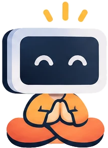

Sync brightness
Move one slider and every display follows, from either screen or with the brightness keys. Turn it off and each display is on its own again.
one level · every display · both ways
Display Monk lives in your Mac's menu bar and keeps every screen in balance. Brightness for every screen, kept in sync if you like, plus HiDPI resolutions, arrangement and monitor controls, one click away.
The real menu, with example values. Turn on Sync Brightness, open a display, or move the LG around the MacBook.
macOS hides most display settings or leaves them out. Display Monk brings them into one quiet menu.
Move one slider and every display follows, from either screen or with the brightness keys. Turn it off and each display is on its own again.
one level · every display · both waysNative brightness for Apple displays, DDC for external monitors, and software dimming for the rest. Combined mode keeps dimming past the backlight's minimum, all the way to black.
native · DDC/CI · gamma · down to blackSharp Retina-style sizes on monitors macOS leaves blurry. It applies instantly with no restart, and you can make it permanent.
from 1600 × 900 on 2K · about 110 ppi on 4KPut each external display left, right, above or below your MacBook, align it, and choose which screen gets the menu bar and Dock.
position · align · set as mainChange contrast, speaker volume and mute over DDC, and switch inputs between HDMI, DisplayPort and USB-C without touching the monitor.
VCP 0x12 · 0x62 · 0x60Your brightness and volume keys control the display under the pointer, with an on-screen display. Script everything with the displaymonk CLI.
brightness & volume keys · displaymonk CLIGentle by design. Display Monk does nothing while idle, spaces monitor writes at least 100 ms apart, and undoes a refresh-rate or rotation change unless you confirm it within 15 seconds.
Uses about 0% CPU with the menu closed.
Display Monk is MIT-licensed, with no paid tier and no trial. Use the menu bar app, the command-line tool, or both.
Sliders, dropdowns and switches for every display, a click away in your menu bar.
Download the appThe displaymonk tool for scripts and shortcuts. It's attached to every release next to the app.
Get the CLI| Feature | App | CLI |
|---|
One small app for Apple silicon and Intel Macs. It sits in your menu bar, has no Dock icon, and stays out of the way.
Version · · released
Download DisplayMonk.dmgPrefer a zip? Download DisplayMonk.zip
Blocked on first launch? Clear it from Terminal instead:
xattr -dr com.apple.quarantine "/Applications/Display Monk.app"
Yes. Display Monk is free and open source under the MIT license. There is no paid tier, trial or account.
Most monitors that support DDC/CI work over USB-C, Thunderbolt and DisplayPort. Some HDMI ports on Apple silicon Macs and some docks block DDC. In that case Display Monk falls back to software dimming, which works on any screen.
Yes. Turn on Sync Brightness at the top of the menu, and moving any display's slider moves them all. The brightness keys work too. Turning it off leaves each display where it is. Sync matches the percentage, not the light output, so two different panels can look a little different at the same level.
Only if you turn on the brightness or volume key options. macOS needs it so Display Monk can catch those keys and send them to the display under your pointer. After updating the app, remove Display Monk from the Accessibility list with – and add it again with +, because macOS stops trusting the new copy.
Brightness, contrast, volume and input are ordinary monitor settings, so the monitor keeps them. Software dimming ends when you quit the app. HiDPI also lasts only while the app runs, unless you choose Make HiDPI Permanent, which you can remove from the same menu.
Quit Display Monk from its menu, then drag it from Applications to the Trash. If you made HiDPI permanent, remove that first from the display's … menu.